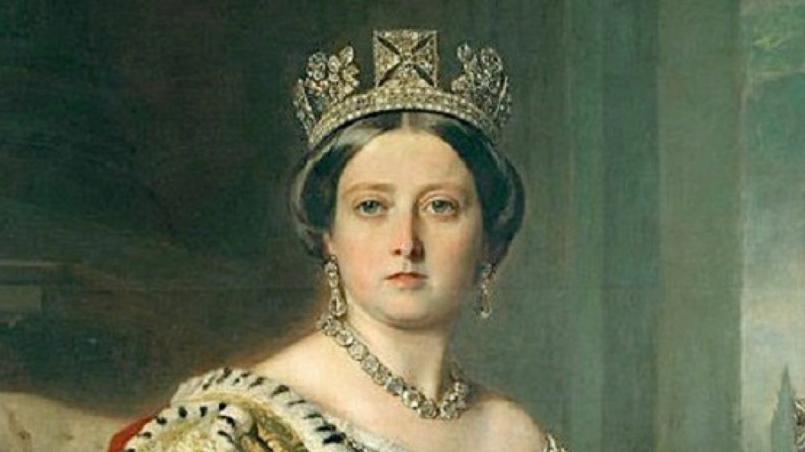

Queen Victoria becaome queen of England in June of 1837. Her early rule was marked by scandal and unpopularity. Her unpopularity lasted only a few years and was bolstered after she survived multiple assassination attempts. Throughout her reign, India became a British colony and it was under her rule that the British Empire reached the height of its power and size. Victoria was most remembered as the longest reigning monarch. Until Queen Elizabeth II achieved that title in 2015. Queen Victoria's other legacy is that of the Grandmother of Europe as her children that survived into aldulthood all married into other European royal families.
Home 